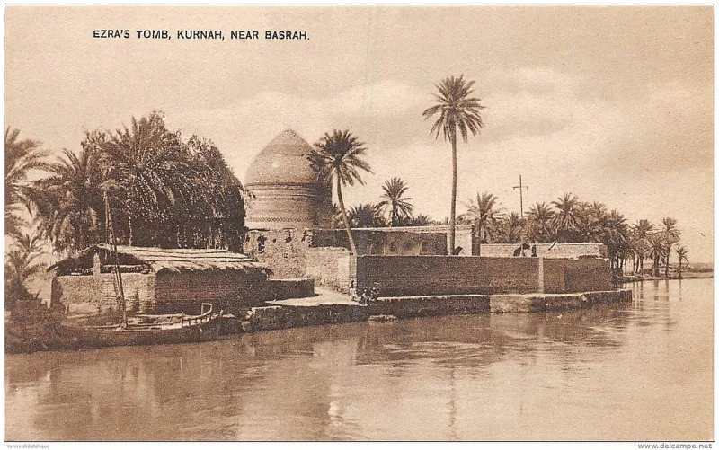
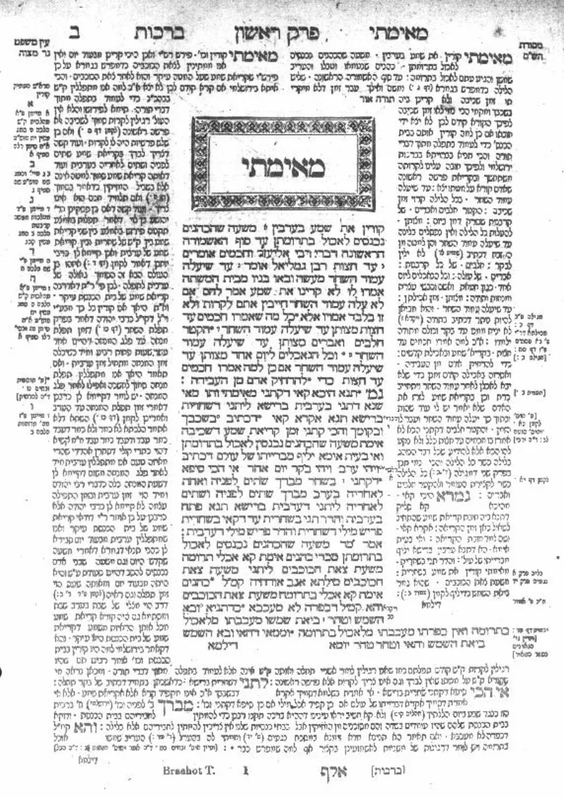
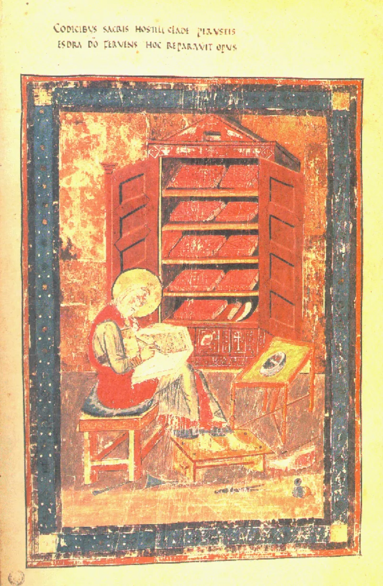

No good counter-argument has been published by Muslim scholars.
Quran 9:30 says as a fact: "The Jews say: Ezra (Uzair) is the son of Allah." It is set in parallel with the Christian confession about Christ, and Allah's curse is pronounced on both groups for it.
No Jewish text or group in the record ever says this. Not the Tanakh.
Not the Talmud or Mishnah. Not Philo, not Josephus, not Qumran, not any rabbinic source.
The heart of Judaism is the Shema (Deuteronomy 6:4). Calling a scribe the son of God would be its worst blasphemy.
Historians call the verse puzzling for exactly that reason.
From al-Tabari onward, commentators say the verse reports some Jews, not all. Classical tafsir names individuals in Medina, such as Finhas, or a faction in Yemen or Arabia who honoured Ezra for restoring the Torah.
Arabic can attribute a subgroup's saying to the group. IslamQA 164633 adds that absence from Jewish books proves little.
A small Arabian sect would leave no paper trail. Some modern writers point to the exalted Ezra of 4 Ezra.
Others point to the traditions about Enoch and Metatron, as the kind of setting the verse indicts.
The defence rests on a sect whose only evidence is the verse needing rescue. That is circular.
The classical commentators also disagree with each other. One man, one delegation, a Yemeni sect.
That shows they had no real referent. And 4 Ezra and Metatron never call Ezra God's son.
Strong for you, and pair it with the Mary case. The verse says the Jews say, exactly as it says the Christians say, where it means the mainstream confession.
So the subgroup reading is special pleading. The pattern is a writer misreporting his neighbours' beliefs.
"I have never met a Jew who believes that. Have you?"



They say the verse reports one sect of Jews, not all of them.
Muslim commentators from al-Tabari onward answer that the verse reports some Jews, not all. Classical tafsir names individual Jews in Medina, such as Finhas. Others name a Jewish faction in Yemen or Arabia. They honoured Ezra for restoring the Torah, to the point of calling him Allah's son. Arabic, they say, lets a subgroup's saying be laid at the whole group's door.
IslamQA 164633 adds that the silence of surviving Jewish books proves little. A small Arabian sect would leave no paper trail. And some modern Muslim writers point to the exalted Ezra of 4 Ezra. Others point to the traditions of a deified scribe around Enoch and Metatron. That, they say, is the sort of setting the Quran could be indicting.
Strong for you: the sect's only evidence is the verse that needs it.
The defence argues from silence about a sect. The only evidence for that sect is the verse that needs rescuing. That is circular. The classical commentators also conflict with each other. One man, one delegation, a Yemeni sect. That shows they held no real referent.
4 Ezra and the Metatron traditions never call Ezra God's son. They belong to different figures and different kinds of writing. The verse also generalises: the Jews say. It does the same for Christians, where the Quran means the mainstream creed. So the subgroup reading is special pleading.
As with the Mary-in-the-Trinity entry already in this app, the pattern is a writer misreporting his neighbours' beliefs. It is not omniscience.